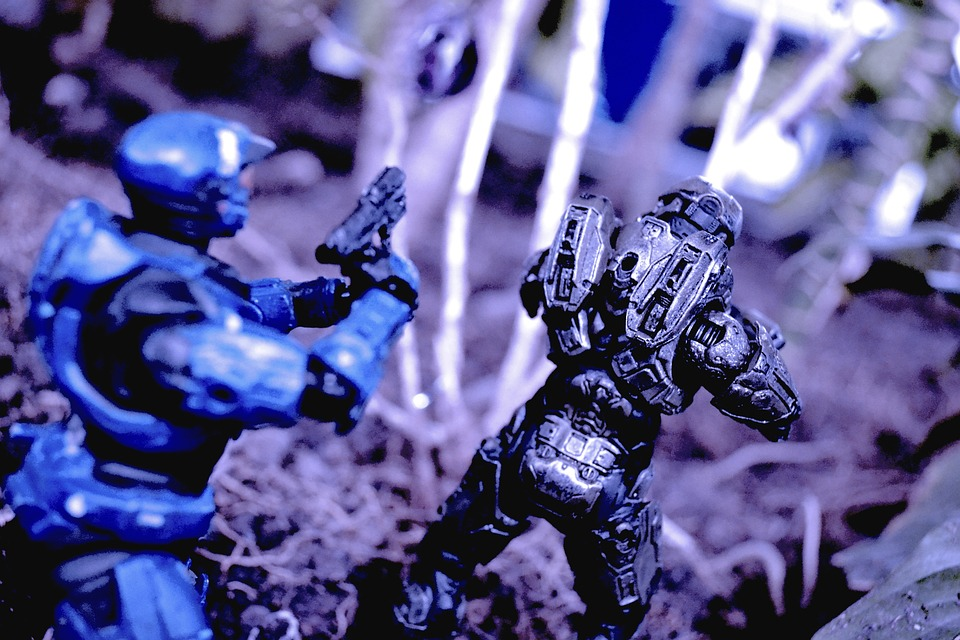

Project List
-
TakeAwaySimulation.java

This project was part of the course EPL133:Object Oriented Programming(University of Cyprus - Department of Computer Science)
GitHub repository -
RobotWar.java
This project was part of the course EPL133:Object Oriented Programming(University of Cyprus - Department of Computer Science)
GitHub repository -
PatternMatching.c
This project was part of the course EPL232:Programming Techniques and Tools (University of Cyprus - Department of Computer Science)
GitHub repository -
LiftSimulation.pddl

This project was part of the course EPL341: Artificial Intelligence (University of Cyprus - Department of Computer Science)
GitHub repository